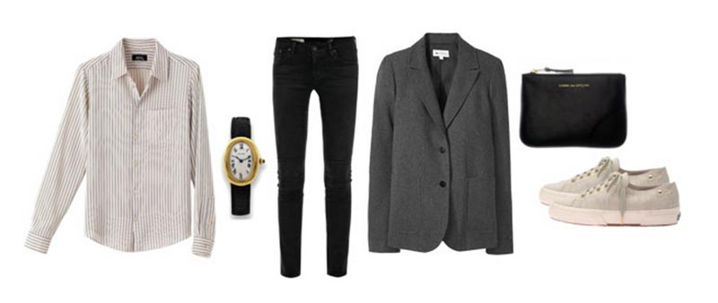

FASHION ESSENTIALS
21 Items To Get You Through Your Twenties
Much like furnishing a new home, building a solid wardrobe once you’re in the real world can be both daunting and costly. Shopping for fun, trendy pieces versus saving and investing in classic items is a debate many of us struggle with, whether we’re new to receiving a paycheck or not. We constantly find ourselves with a growing pile of impulse purchases that we barely wear. Meanwhile, day after day, event after event, we expectantly return to the few quality items that always look classic and have been shown to stand the test of time. So which are these items are worth saving for? Well, with the help of Bradley Agather, author of style blog Luella and June, we’ve curated a list of 21 items every woman should have to get through her twenties. And because we know the economy is what it is, we’ve included a super budget-friendly item to get you by, as well as a more quality (read: costly) investment suggestion.
Fashion Essentials for The Everygirl:
The Shoes
- Ballet Flats: When heels simply won’t do, ballet flats are a must. They pair easily with just about anything. Not to mention, they’re as comfortable as they are chic!
- Strappy Sandals: It’s impossible to get through summer without a pair of these. A classic leather pair will always be in style.
- Black Heels: A good pair of black heels will last you a lifetime. Whether you’re headed to the office or out for cocktails, black heels are a must-have!
- Running Shoes: These should be comfortable and provide great support whether you’re at the gym, hiking outdoors, or exploring a new city.
The Clothes
- A Striped Tee: When it comes to Ts, a striped one is a must-have. It’s easy to wear, casual, and oh, so versatile! Throw it on with a pair of denim and ballet flats for a classic look, or go bold and mix it with a printed pant.
- Cardigan: Whether you’re trying to stay warm or you just need a good layering piece, a cardigan is a wardrobe staple. Pair it with a fitted pencil skirt for the office, or, for the weekend, button it up over a classic white tee and jeans.
- Tailored Blazer: Every closet should have a tailored jacket that can be worn with jeans or over a cocktail dress. To keep it feminine, be sure the silhouette is fitted.
- Skinny Jeans: They go with everything. Enough said. Be sure to find a pair that fits you to a T.
- Little Black Dress: Is there anything more classic than the LBD? The key here is to keep it simple. Add a statement jewelry piece and you’re good to go.
- A Dress That’s Just for Fun: Once you’ve got your classic LBD, pick up a dress that’s just for fun. Something that at first glance might not seem totally practical, but it’s worth every penny because you feel good in it!
- Tailored Skirt: Interviews, meetings, or dinner parties: a tailored skirt is the perfect staple for looking both dressed up and sophisticated.
- Cold-Weather Coat: Even if you don’t live in a cold climate, who’s to say you won’t visit New York City, the Rocky Mountains, or perhaps more realistically, your relatives in Iowa over the holidays? It’s better to be prepared.
- A Bra for You: Finding the right bra can be quite tricky. Start by getting yourself measured to find the correct size, and then choose a bra that’s comfortable and will work underneath a variety of different style tops.
- A Bra for that Special Someone: Have some fun with this one! Lace? Neon? Whatever makes you feel the best!
- No-Show Underwear: Sometimes even thongs won’t do the trick. For those lightweight fabrics and form fitting pieces, seamless panties are key. You’ll be surprised how often you’ll reach for a pair of these.
The Accessories
- Leather Handbag: A leather handbag will last for years to come. It’s functional and chic. A medium-to-large size is ideal so that a girl-on-the-go can easily fit her iPad, iPhone, and all other daily essentials in here.
- Clutch: Whether you’re headed to a cocktail party or a date-night at the movies, the clutch is the easiest way to dress up any look.
- Weekender Bag: For those weekend getaways where a tote is just too small and your heavy-duty suitcase is too big.
- Sunglasses: No matter if you’re a Jackie O. or an Audrey Hepburn in Breakfast at Tiffanys, pick a shape and style that makes you feel like a star. (Not to mention, a good pair is essential for hiding those tired eyes!)
- Understated Jewelry: Your essential accessory. The piece you wear from morning until bed time. You feel naked without it. Whether it’s a pair of earrings, your grandmother’s necklace, or a vintage ring, keep this one piece classic and simple.
- Watch: You know what they say: punctuality is a virtue. A good watch will keep you on time, and it’s an excellent layering piece between piles of gold bangles.

Source: Fashion Essentials for the Everygirl